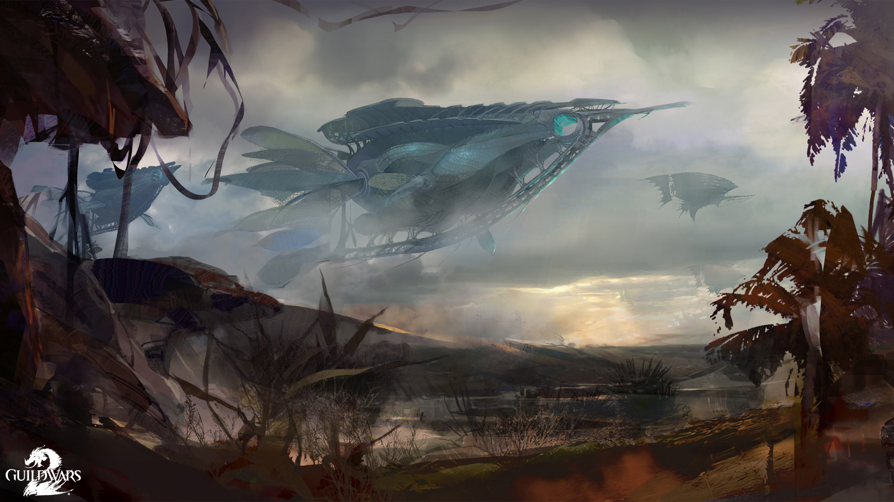

Episode 1: Flame and Frost
Refugees begin to arrive from the north, bearing tales of outlandish raiders. The commander rallies to the aid of new allies and begins to uncover traces of a threat to all of Tyria.
— In-game description

In the Season of the Zephyr, 1326 AE, strange storms began to brew over the Shiverpeaks while charr and norn refugees crawl from the wreckage of their homes in the Wayfarer Foothills and Diessa Plateau, struggling to find shelter in the south. Refugees kept sprawling unto the capitals Hoelbrak and the Black Citadel for the norn and charr, respectively. The Wolfborn and Adamant Guard were unable to gather any information about the attacks from the traumatized refugees for weeks. As time went by, the information that could be gathered didn't make sense and was passed off as shock; many saying that dredge were sighted in the attack, however they were seen using fire magic. The unusual weather patterns were later discovered to be caused by steam erupting from underground, wreaking havoc with the air temperature and humidity. However, the cause for the steam was still unknown.
After the influx of refugees, many sought new shelter. A good number of refugees began traveling to Lion's Arch where a generous benefactor was providing supplies within the city's walls. Later on, the Consortium was discovered to be the generous benefactors, which caused some to distrust the trading company's generosity due to their previous records. The Consortium was set to give the refugees a new home in Southsun Cove.
After the initial attacks, the perpetrators' assaults started to become more brazen, and sightings of Flame Legion charr and dredge became increasingly common. The Flame Legion were noticed using dredge technology causing speculation of an alliance. It was later confirmed by survivors that the Flame Legion and dredge were working together in the assaults. After their discovery, the Molten Alliance, as they were called, began spying on the locals to gather information. The Black Citadel convened a war council to assess the situation and what actions should be taken. Due to the publicity of the attacks, the Order of Whispers and the Vigil started to contribute against the alliance. The Order of Whispers sent a double agent to gather information from the inside while the Vigil chose to locate the hideout of this alliance.
During this time, a young norn traveled to the Black Citadel to request assistance for the defense of his homestead, Cragstead, which was recently captured by the Alliance. However, he was turned away as the charr were spread thin and couldn't spare any soldiers, but also because the young norn, named Braham, claimed he was the son of the legendary Eir Stegalkin and the late Borje the Sun Chaser. Rytlock Brimstone, not believing the norn, dismissed him as a liar and sent him to Hoelbrak. When Braham arrived at the norn capital, he was again denied any aid by Knut Whitebear. The leader of the norn capital feared that the city would be the next target and preferred not to scatter the forces away from the city. Whitebear decided to reinforce the defenses of the city instead of sending men out in the field. Braham was later discovered to hold resentment towards his mother Eir for reasons unknown. He later chose to retake his homestead with only a few allies on his quest. Braham was able to retake Cragstead with the Commander's help, however many were taken hostage to an unknown location, but ultimately bolstered the homestead's morale.
While the Legions' war council was in session, a gladium charr who lost all of her warband in a mining accident, Rox, was sent to retake Nolan Hatchery as part of a test as she wanted to be accepted into Rytlock's warband, the Stone Warband. The Nolan Hatchery was a strategic stronghold for the Legions as it was a main supply of siege devourers. With the aid of the Commander, Rox was able to re-secure the Nolan Hatchery and befriend an albino baby devourer named Frostbite, however they too were unable to save everyone.
The Order of Whispers was able to plant a double agent within the alliance and gathered valuable information. Agent Brandubh, of the Whispers was able to discover that the alliance has begun to dig underground east, south, and west. Prisoners were being taken every day; some put in pens and others used for weapons testing the unstable, but undeniably powerful Flame and dredge technology combination. The dredge technology was altered to be used by the Flame charr, and flame shamans have begun using transformations on the dredge. However, cracks in the alliance were beginning to show as the charr did not like being so deep underground, away from the sun. Reason for the alliance is still unknown. Something pushed these two factions together.
After a few months, the Vigil were able to find the entrance to the Molten base and moved in. With the aid of Rox, Braham and the Commander, the Vigil raided the weapon facilities. The cause for the steam was discovered to be the Alliance's use of fire technology to mine underground. They were able to cave in the facilities by detonating the caverns, crippling the Molten Alliance in the aftermath. In the final days of the war, dredge and Flame Legion captives who were interrogated revealed that the alliance had been run by a city dweller. This person's whereabouts and aliases were unknown at this time.
Dragon Bash
You may not know me, but I know you. I'm calling upon you because you're capable in the face of danger. If you consider yourself a force for good in this world, then I implore you to attend the Dragon Bash ceremony in Lion's Arch. I've heard whispers about a threat to the Ship's Council and, if left unchecked, to the city itself. I'd intervene myself, but circumstances prevent it.
I'd wish you luck, but luck is what fools and idiots require to stay alive. You, I believe, are neither. I will surely contact you again,
—E

the first annual Dragon Bash festival was held to honor the defiant spirit of Tyria against the Elder Dragons. Dragon Bash was inspired by the old Canthan Dragon Festival, but with a twist to fit the modern day realities. The Ship's Council hosted the event to celebrate the collective victories against the dragons-past, present, and future. The festival saw a decoration of the city, night time fireworks, and activities. However, some consider the celebration of dragons an insult; that it is a disgrace to everyone fighting the dragons, the lives of those sacrificed should be acknowledged, not the collective thought of the Elder Dragons. Others protests this fancy celebration is an ineffective cost as is causing the hardships of job security to go down even further since the karka invasion of the past year.
One of the main activities was Dragon Ball Arena, a combat arena created by a sylvari named Finolla. She gathered the concept while studying the Bane of the Black Citadel where she met the gladium Volak Ironsnout. With Volak's help, Finolla was able to raise the gold to create the arena and was later purchased by the Ship's Council to be part of the first annual Dragon Bash.
The main attraction of the festival is the effigy lighting ceremony. The ceremony is to represent the ferocious nature the races have shown against the Elder Dragons. Before the ceremony begins, the Commander receives a notification from an individual named 'E' claiming there is a threat to the council. The mysterious person(s) explain that they would intervene but circumstances prevent it. As the ceremony begins, Captain Magnus the Bloody-Handed introduced the three members of the Ship's Council that will be present for the effigy lighting; Captain Anne Reid, Captain Tokk, and Captain Theo Ashford. Magnus then asked the cultural representatives, members of the races who have lost their kin to the hands of the Elder Dragons, to hand over the memorials of their kin to the pyre so the lighting may begin. When all the items have been placed an unusual discharge of electrical energy ignites the pyre and explodes. The explosion injured the charr cultural representative, Garrot Ambercowl and the three council members. The Lionguard were instantly on the scene, with Inspector Ellen Kiel at the helm. As Kiel and the Commander attempted to expel the chaos, a woman from the crowd volunteered to try to heal the wounded. As this was happening the three council members were placed in a dolyak cart and were sent to Fort Marriner for healing. During the attack, many cultural representatives fled the scene.
It was later announced that one of the council members did not survive the attack; Captain Theo Ashford was killed. In response, Logan Thackeray located Marjory Delaqua in the Dead End bar, in the Eastern Commons of Divinity's Reach. Thackeray explains that Ashford was a old friend and he wants to know who was behind the attack personally. Logan pays her handsomely for the investigation.
It was later discovered by the Commander that Marjory Delaqua was formerly part of the Ministry Guard, but during an investigation of a child's murder, she was grabbed by 'E' from behind (she couldn't see 'E'). She is then told there are forces in this world that would take us all down unless we stop them together. After that encounter she sometimes gets contacted by the mysterious person.
In Lion's Arch, Delaqua met up with Kiel, offering her services towards the investigation. Marjory, after being accepted, uses a Tassi box (a device by Magister Tassi that was similar to the Candy-Powered Matter Meter used to discover Mad King Thorn's past) to detect any energy fluctuations. It was revealed that the energy discharge was triggered and was not accidental, and that Ambercowl's body showed signs of arcane residue. The Tassi box was then used to detect if any individuals also had similar arcane residue. It was discovered that the woman who attempted to heal the charr, Mai Trin, had the same energy. She explained her plan was to fill the empty seat after a council member was taken care of. When the Commander and allies attempted to capture her, her Aetherblade pirates appeared to even the odds. Ultimately, Mai Trin was able to get away.
Sky Pirates
In Lion's Arch, a festival is announced to celebrate the dragon's defeat. The commander arrives for the opening ceremony, but is soon plunged into a darker investigation...
— In-game description

After the attack, Inspector Ellen Kiel spearheaded the investigation into the murder of the councillor, Captain Theo Ashford, and later with the escape of the fugitive, Mai Trin, the Lionguard began a search for her hideout. In response to these series of events, Captain Magnus the Bloody-Handed made a calculated decision to continue the Dragon Bash festival so fear and chaos would not escalate. During this time, Trin's Aetherblade pirates began to raid nearby holographic projectors, which were created by the asura to be used to project holographic symbols of dragons for the ongoing festival.
Inspector Ellen Kiel successfully located the hideout of the runaway fugitive Mai Trin and her mysterious 'Aetherblade pirates'. Thereafter, the Commander and Ellen Kiel raided the hideout located at Diverse Ledges in the outskirts of Lion's Arch. The hideout was using holographic technology to create an illusionary wall to deter intruders. Throughout the raid, they were met with deadly resistance by the Aetherblade pirates. The sewer system quickly turned into a shanty town created by the pirates within the mountain range as a base. The hideout continued around, facing the Sea of Sorrows but could not be detected from the outside due to the stolen holographic technology. Later, throughout the spiralling base the Inquest started to appear beside the pirates, defending them. At the top of the mountain, the Lionguard found Mai Trin with her First Mate, Horrik discussing their fear of an individual named 'Scarlet' for unsuccessfully opening a council seat. The duo were attempting escape in airship vessels that resembled the Pact's airships. However, Kiel and the Commander were successful in stopping their escape and were able to destroy the vessels.
After the capture of Mai Trin, Kiel began the interrogation process but the Aetherblade Captain stayed tightlipped, however some information was gathered from the base. The Lion's Arch records had no information on the pirates, though the Lionguard were able to capture some of their low-ranking members for interrogation. The Lionguard discovered that the Inquest were able to financially and scientifically back up the Aetherblade pirates. The Inquest were able to incorporate air magic in the pirates arsenal allowing them access to the skies. The vessels the sky pirates used were also stolen from the Pact's base and later used to build their own designs. The Aetherblades were also able, with the help of the Inquest, to create new weaponry unseen in Tyria: a long and narrow blade that they called a rapier which had been proven to be an effective weapon, and a handheld cannon used by Horrik. No other information was gathered about the mysterious individual they called 'Scarlet'.
A second Aetherblade base was discovered in Broadhollow Bluffs, outside Lion's Arch. The Commander set out to plunder the second hideout and learned that it was the garage for another Aetherblade airship. This new information confirmed that the Aetherblade pirates are much bigger than one base within Lion's Arch. Meanwhile, in the city, Magnus discovered that Theo Ashford's second was killed weeks prior in the events of the Molten Alliance. Because there would be an open council seat, the Ship's Council were forced to have a council election for a new captain. In reply, Magnus nominated Inspector Ellen Kiel for the position. However, as only captains can be nominated, Magnus commandeered the abandoned Aetherblade airship for Kiel, effectively making her eligible for the election.
Queen's Jubilee
You Are Invited to the Jubilee Closing Ceremony By Royal Proclamation,
Queen Jennah's Jubilee will conclude with a closing ceremony in Divinity's Reach. Her Majesty will be in attendance, along with her esteemed guests and emissaries from across Tyria.
Her Majesty will close the festivities with remarks at the new coliseum, built on the former site of the Great Collapse in Divinity's Reach.
May the Six Gods watch over you, and may they continue to bless the benevolent Queen of Kryta.
— Her Majesty Queen Jennah

In 1316 AE, Queen Jennah was crowned as the Krytan Queen, and ascended the throne. In 1326, on the anniversary of her coronation, Queen Jennah hosted a jubilee to celebrate her ten year reign as the Krytan monarch. The Queen of Kryta reclaimed the Great Collapse within Divinity's Reach, and constructed a towering pavilion in the symbol of a griffon; the symbol on Kryta's crest.[46] Although the celebration was in the name of Jennah's tenth anniversary as Queen, she also wanted to hold the jubilee to show the other nations that humanity has not 'fallen'.[47] Emissaries from all the nations in Tyria were invited to marvel at the ingenuity of humanity's survival.
Along with the pavilion, the Crown also unveiled humanity's next leap in technology; the Watchknights.[48] The Watchknights resemble golems in the fact that they are sentient being tailored for commands by their superiors. Unlike the Asuran golemancy techniques, the Watchknights use rotating cogs similar to that found in a watch, hence the name given to the sentinels. Where the golemancers use magitech to control their golems, Watchknights are controlled through verbal commands issued by mesmer magic. The creatures were used throughout the pavilion as guards and as attractions.
Under the pavilion sat the main attraction of the jubilee; a circular arena spoked into six separate areas, each defining a moment of hardship that the Krytan nation has endured: Flame Legion, bandits, Ogres, Destroyers, pirates, and centaurs. As it was dangerous (and immoral) to have such sentient creatures locked up for sport, the Watchknights were able to express their second functionality, an ability to change form into such creatures through mesmeric illusions.
As the majority of emissaries began to arrive, Queen Jennah commenced the Opening Ceremony. Jennah revealed the arena and its testament to the Kryta's will to survive, as well as the Watchknights and its leap in technology for the human race. Within the opening ceremony, the Ministry Guard were not seen, as Jennah has forbade them to enter the pavilion, in response to their numerous scandals. Many champions of Kryta arrived to the ceremony at Jennah's call to test the Watchknights strength, including Rytlock Brimstone. However, the Blood Legion Tribune outsourced the duty to Rox, who brought Braham along.The Commander was there as well. Ultimately, the Queen chose her own personal champion, Captain Logan Thackeray of the Seraph Guards to fight one to the Watchknights. With mesmer magic by Countess Anise of the Shining Blade, the Watchknight continuously changed forms, but Logan was able to hold off the sentinel. Nevertheless, the Watchknight returned to fight, now in the form of Rytlock, Logan's old friend.[49] When Anise attempted to shut down the Watchknight she found that the commands have been overridden. On cue, Aetherblade pirates rained down on the ceremony causing general chaos around the arena. Throughout the fighting, Anise deduced that whoever overwrote the Watchknight's commands must be nearby. She later noticed a mysterious figure perched on one of the columns. By order of the Queen, Rox attempted to shoot down the stranger with her bow, however the mysterious figure continued to teleport and toy with the young charr. Nevertheless, Rox was able to get a hit after several attempts, which drove the stranger to escape.
Episode 4: Clockwork Chaos
Queen Jennah announces a new celebration in Divinity's Reach, but strange machinations are afoot.
— In-game description

After the attack from the unknown perpetrator and the Aetherblades, the Seraph recommended the Queen to cancel the celebration for fear of her safety. However, the Shining Blade insisted that the attacker desired to disrupt the Jubilee. Ultimately, the Queen chose not to close the pavilion believing that by shutting down the pavilion, humanity would be shown as weak and fallen (which was one of the primary reasons for the celebration). In response, the Seraph Guard,[50] under orders of Logan Thackeray began an investigation as well as doubled the patrolling men within the city.
Although the authorities were on high alert for a reappearance by the mysterious stranger, most of the jubilee was uneventful until the closing ceremony. The Closing Ceremony commenced with Queen Jennah taking the stage of the pavilion, giving her speech on humanity's resolve, unity, and strength. However, the Queen's speech was quickly interrupted by the same fugitive; this time with her hood down and her face revealed to the world. The stranger was revealed to be a female sylvari naming herself Scarlet Briar. She laughed at the 'endurance' and 'trials' of the human race and began explaining how fragile the Krytan society truly is. To prove her point, the sylvari was somehow able to control the Krytan Watchknights, and twist them into twisted, horrific machinery. As the horrors began to cause chaos around the pavilion, Scarlet declared that there were four bombs planted 'to keep things lively', and attempted to kidnap the queen. As the maniacal sylvari shot an explosive bullet onto the stage in an attempt to capture the Queen, Lord Faren attempted to rescue her. It was later revealed that the Queen on stage commencing the closing ceremony was actually a mesmeric illusion created by Anise in an attempt to bait the mysterious fugitive. The plan was successful, but as the knowledge of the plan was only limited to the Queen and the Shining Blade, Lord Faren was prized with a fall into the arena level of the pavilion. During this time, the Commander was able to successfully disarm the four bombs and Watchknights around the pavilion. Scarlet, however, did not seem fazed by the progress of these events as she revealed the location of a fifth bomb located at the evacuation point for the Seraph and citizens alike. The Seraph failed to reach the disarm in time, causing large amounts of civilian and Seraph casualties. After the bombing, Scarlet traveled to the secluded arena level of the pavilion,[51] effectively locking her inside the arena with a number of hostages while she kept taunting and berating the Queen's 'endurance' and 'trials'.
As chaos continued, the Commander was tasked with finding a way into the arena, while the Shining Blade recommended to know more about the terrorist to better combat her unpredictable nature. An emissary from Rata Sum, Vorpp was able to distinguish that the sylvari was able to travel into the pavilion through teleportation, similar to that seen by his own kind. The asura concluded that by reverse engineering her portals, the Commander and their allies may gain access to the arena floor.
As time passed, more information about Scarlet and her history began to surface. It was discovered that upon waking from the Dream of Dreams, the sylvari was inundated by the 'complex systems of small, interlocking parts that affected one another in an ever changing dance'; fascinated by this life itself that she was now a part of. Upon awakening, the sylvari was given the name Ceara and was told of her purpose as the Pale Tree directed of her. Ceara almost felt offended by the linear lifestyle her people had to endure.[52] Choosing to follow her own path, the sylvari left the Grove after eight years of voracious study to explore the world and learn about the ever changing mechanisms that define it. She became a solitary scholar, first learning the smith crafts of the norn in Hoelbrak that defined their culture. She was accepted as an apprentice to a norn named Beigarth who taught her the basics of smithing and metallurgy. Just like her study at the Grove, the lessons at the norn's capital were not a full meal capable of sating her hunger for knowledge. She left Hoelbrak in a winter's time, even under Beigarth's insistence to teach her more advanced methods.[53] Next she continued her hermit-like lifestyle to charr lands where she learn of projectiles and firearms from a gladium named Asagai, but just as before, the scholar abandoned her work only learning basic and some intermediate skills. Ceara finally decided to travel to Rata Sum, hoping that the asura may sate her hunger.
Being accepted by the colleges of Rata Sum became a difficult obstacle for the non asura. However, when the sylvari shown her skills with rudimentary golemancy, she was allowed a simple Dynamics course to assess her capabilities. Ceara believed she was being accepted for her knowledge, but this wasn't the case (although she was exceptionally intelligent for a sylvari); she was accepted because of the asura's curiosity to study the sentient plantlings since the race's awakening.[54] Within two years she was shown to be quite intelligent and completed the shortened course template[55] she was given for both Dynamics and Statics. When given the same opportunity in Synergetics, Ceara found the field as boundless as her interest. The Headmaster of Synergetics, Headmaster Omadd, taught her the theories and basis of the Eternal Alchemy; that it was a metamagical engine or a transcendent equation to be solved. However, Ceara believed that the Eternal Alchemy was a key to 'access the basic fabric of reality itself'. Her thesis was not received well by the Arcane Council, nevertheless, Ceara did not care as she was separating herself from their rigid collegiate system. She then joined the Inquest which allowed her access to more knowledge that the colleges were 'scared' of or deemed 'dangerous to explore'. Later Omadd was able to track her down when she studied with the Michotl tribe,[56] backing her thesis and wanting to explore it further. They both studied and prepared an experiment that, Omadd predicted, would 'transcend the physical body and delve into the metaphysical vortex of reality'.
Ceara eagerly waited to set up the isolation chamber so she could see the inner mechanisms of this world. Inside the machine, she saw the universe stretched out before her, and then Tyria. But then the voice of the Pale Tree pleaded the sylvari not to go on; insisting that by seeking to comprehend the forces that shape them, she will unleash them. At that moment, Ceara's view changed to the Pale Tree in the Grove with thorn vines[57] creeping around the bark of the tree. Ceara realized that the vines were her, understanding her purpose. The Pale Tree attempted to plead with her once more, telling her if she was not one with what she was born to be, she would be lost and dangerous.
Upon leaving the vision, the sylvari convulsed inside the machine. When she woke up she explained to Omadd that she saw 'everything'. She then declared to the asura that her name now was Scarlet Briar, going against the conventions of the sylvari culture. Scarlet then killed Omadd.
After some time, Vorpp was able to reverse engineer a portal into the arena level by gathering information from the teleportation technology found in Broadhollow Bluffs. The asuran emissary was able to conclude that Scarlet used the same teleportation methods seen through the steam machines. How and why Scarlet was able to use this ability is still unanswered. When the portal was open, the Commander was able to rescue some of the civilians, however Scarlet, who declared the Commander to be her number one enemy, was prepared using Aetherblade ships to make a getaway.
Episode 5: Echoes of the Past
As Tyria prepares for war with another Elder Dragon, the search for information becomes paramount. The arcane secrets stashed inside the depths of the Durmand Priory shed some light on your mysterious vision, and also give hope for the future.
— In-game description
A letter from Ela Makkay mentions that Explorer Campbell of the Durmand Priory was out near Fort Salma, examining the ghost sightings there. Similar to the ghosts of Ascalon, the former Seraph that died there believe the living to be Mordrem and attack on sight. After fighting your way through, Campbell is found under assault by Belinda. Luckily, though, Marjory arrived just in time to spare the scout. After exchanging a few words with her sister, Belinda possessed her former sword. This surprised Marjory as much as anyone else.
Trahearne then sent a message that Fort Vandal has been recently vacated. Messages left behind in the fort suggest that they were not just mere bandits, especially as some of the debris found were white robes. Travel through it allows for easy access to Camp Resolve, a Pact foothold in the Maguuma Wastes. Out there, Marshall Trahearne was organizing the camp and giving the Commander a run-down of what happened so far. Trahearne reached out to all of Destiny's Edge, except for Rytlock who is still missing. Caithe and Canach were out on a patrol, but they hadn't yet returned. Trahearne was worried, and sent a small squad to go out and find them, led by the Commander.
The squad going to look for Caithe and Canach come across a Mordrem corpse just north of the Blue Oasis outpost, but it seems odd. Canach appears and warns that the body has been booby-trapped, with a mine implanted in the body in order to kill investigating Mordrem. He accompanies the squad to go on to find Caithe, planting more Mordrem-mines along the way to help thin out their numbers. A bit deeper in, Caithe is found fighting with some Mordrem, but still alive. Seems her squad had run afoul of the Mordrem and were waylaid from finishing the patrol. They do finally get to a high cliff, offering a vantage point to find a Mordrem stronghold to the northwest, complete with glowing vines and a huge blossom with sharp teeth-like thorns. Rather than trying to fight their way back, they decide to send up a flare so a helicopter could rescue them. Sadly, this attracts more Mordrem, and the small party has to fight them off until rescue can arrive. They do manage to board the helicopter, though, and get transported back to Camp Resolve
Marjory and Kasmeer ran into a dead end as far as investigating in the Durmand Priory archives. It turns out that the only member who knows the secret cipher to get into the hidden archives is Explorer Campbell, who was now out in the Silverwastes. After getting the password, Marjory and Kasmeer meet up with Ela Makkay in the Priory's archives. She leads them into a deeper layer of the archives, where the most precious books and relics are kept. Down there, after reading various books hinted at by the cipher, Ogden Stonehealer is down in the Special Collections. He points out a special hourglass that protected Glint's Lair. The Commander, along with Marjory and Kasmeer got sucked in, but they two were on divergent paths. After fighting their way through the lair, the two converge near the end of the lair. There, a vision of the Master of Peace retrieving Glint's last unbroken egg was revealed, and he is carrying it off to a safe spot for it to be hatched. Ogden doesn't know where that is, though. After venturing through the lair, though, Ogden will answer many questions.
Episode 6: Tangled Depths
As the Pact continues its preparations for the fight against Mordremoth, a new opportunity arises. But the search for the Master of Peace ends in tragedy, calling into question the motives of a friend.
— In-game description

A letter from Logan asks for the Commander to meet him and Destiny's Edge in Camp Resolve. Once they meet up the Commander informs them that they won't be able to work together for a while and reveals that Glint had one remaining egg. The player then leaves to see Rox, Braham, Marjory and Kasmeer, oblivious to the fact that Caithe is secretly stalking them. They agree that the next step must be to find the three Zephyrite masters, and ask Taimi for their location. They learn that the Masters left through the south west gate. Before leaving, the player confronts Caithe, as she agrees to help with tracking the Zephyrites.
The Commander tracks them across the Silverwastes to an underground passage just north of Red Rock Bastion. Rox has already found her way there, but the path is blocked by several malformed Mordrem. The group quickly dispatches them, as the Commander catches up with the Aspect Masters, just in time to see the Master of Sun die at the hands of a powerful winged Mordrem Teragriff. After slaying it, the Master of Lightning realizes that the Aspect Masters are no longer fit to track the Master of Peace, and he finally reveals the secret Zephyrite symbol the Master left behind to allow the group to trace him.
The newfound trail leads the player to a secret labyrinth underneath the Silverwastes. Upon reaching it, the player meets Caithe, who reveals that the Mordrem have forestalled the group and that the other heroes got separated inside the twisted labyrinth. The Commander, alongside Caithe realize that they are hunted by the seemingly immortal Mordrem Lurcher, while racing through the maze to save their allies. With their combined might they manage to reach the maze center, where the Master of Peace is under attack by a powerful Mordrem Troll. Unfortunately, the Master is dying from the sustained wound, as desperately tries to hand over Glint's egg; but just as he dies, Caithe grabs the egg, stating there's "No time to explain." She shadowsteps away, leaving the group confused about her motives.
Episode 7: Seeds of Truth
To find where Caithe may be now, the Pale Tree suggests returning to where she's been. Retracing your friend's steps across the years will take you down a strange and dark path.
— In-game description
In the search for the dragon egg, it's decided that more needs to be known about Caithe's past. In a moment of clarity, the Avatar of the Pale Tree is awake long enough to talk to the Commander. She is surprised that Caithe stole the egg, stating that it was the Commander's fate to care for it, which is why we received the vision. To track down Caithe, the Commander is given 4 memory seeds, which is used to access the Dream of a certain sylvari in a spot that is significant to the Dreamer. Right in the Omphalos Chamber, the first memory seed for Caithe is planted. It is for the time when the second wave of sylvari are born. The Firstborn have a meeting about what to do about this matter. Leading up to this meeting, Caithe learns from Faolain that Wynne is hiding a secret, one that could impact all sylvari. Shortly after the meeting, we learn that several sylvari have been captured by "imp-like creatures" and doing experiments on them. Faolain and Caithe set off to investigate.
The second seed is planted outside an Inquest camp in Metrica Province. Marjory agrees to protect the Commander during the vision. Caithe and Faolain infiltrate the compound and learn that Vorpp was doing experiments on the sylvari, Canach being one of them. Many of the sylvari died before rescue, but Vorpp is stopped before killing all of them, and escaped before Faolain could get more answers out of him.
The third seed is planted in the Northern Silverwastes, only accessible thanks to skritt tunnels that have just been opened. In the vision, Caithe and Faolain came across a tribe of peaceful centaurs with a philosophy similar to Ventari. Wynne has befriended them. Faolain, however, has brought along some "friends", just in case. While Caithe is busy talking to a certain centaur, Faolain and her friends attack the centaurs. Caithe assists in the slaughter, and the two chase after Wynne until she escapes through a portal behind a strange wall with odd runes inscribed on it. In order to find a way in, Marjory returns to the Durmand Priory to learn more.
Episode 8: Point of no Return
The memory seeds have led to a cave in the Silverwastes where Caithe once chased after Wynne. Getting into it, however, won't be so easy. Perhaps Ogden Stonehealer at the Durmand Priory will know of a solution.
— In-game description
Marjory calls the Commander to the Hidden Archives of the Priory again to talk with Ogden Stonehealer. The old dwarf recognized the symbols as Forgotten seals, and calls for a book that discusses a procedure similar to ascension. While the Commander will not be performing that rite, they do summon Turai Ossa to create Divine Fire to perform a similar service. Once three relics tied to the ancient Elonian hero are collected to summon an echo of Turai Ossa, Marjory, reading the book, explains the procedures to the Commander in turn. The first rite is reclaiming a central pillar, out by the entrance to the archives; the second rite is escorting Turai to a certain point down a side passage; the final involves collecting three vision crystals, scattered in three different locations around the archive. Once the three crystals are gathered at a central location, Turai forges them together into one pillar, and manifests as a Divine Fire torch. Marjory holds onto this torch and heads straight for the cave where Caithe is believed to be hiding.
Logan summons the Commander to the Pact's camp in the Silverwastes, where Eir presents her son Braham to Zojja and Logan. The Pact is just about to set out to defeat the dragon Mordremoth before he fully awakens and gets the chance to wreak the havoc the other elder dragons have done upon rising. Before anything more can happen, however, the Mordrem attack the camp, initially from the south, then from the north. The camp is nearly overrun before the Commander manages to light the signal fire to call in reinforcements and defeat the Mordrem. The Commander says good-bye to Trahearne and the remaining members of Destiny's Edge as Rox, Braham and Kasmeer all go to the cave.
In the northern Silverwastes, Marjory returns the Divine Fire torch to the Commander to wave the torch before the wall while she, Kasmeer, Rox and Braham hold back the Mordrem in the area. Shortly after the three symbols are lit, the Mordrem all retreat and the cave entrance opens. Rox takes the torch shortly before the company gets sucked through the portal into the dark cave. After fighting past cave spiders and mystic creatures most likely left by the Forgotten, they come upon a clearing lit by a golden glow from the various relics. Here the final memory seed is planted, revealing Caithe and Faolain confronting Wynne in the cave. Wynne is still adamant against revealing her knowledge to Faolain, while Caithe is sympathetic to Wynne. Faolain wanders off to gather bristle-burn thorns from a nearby bush to torture Wynne for the information. While she is gone, Wynne confesses everything to Caithe. Wynne confirmed that Faolain attacked the centaurs first, who were initially unarmed, and confessed that she learned in her dream that the sylvari were indeed supposed to be minions of Mordremoth. To keep this secret from Faolain, and at Wynne's insistence, Caithe kills Wynne. The vision completed, the Commander confronts Caithe, who confirms that everything seen is true. She refuses to hand over the dragon egg though, feeling it is too valuable and insisting that she is on the same side as the Commander. However, the Shadow of the Dragon attacks the Commander, cutting them off from their other allies. With bursts of divine fire tossed in from Rox and Braham shielding periodically, a circle of divine fire imprisons Mordremoth's champion enough to weaken it so that it can be killed once and for all. However, in the chaos of the battle, Caithe escapes once again.
Meanwhile, the Pact has launched its airship armada to attack Mordremoth. Trahearne, with Eir, Logan and Zojja, orders fire from the lead ship. Vines attacked the ships, destroying most and bringing them down. Sylvari attacked the survivors, of which only Eir is seen conscious and firing arrows, while Logan hangs on the bow of the ship, holding Zojja in his other hand. Trahearne is nowhere to be seen, and it is currently unknown if he was also controlled by Mordremoth.
Visions of the future indicate that Rytlock will return, distrustful of all sylvari now that they are known to be Mordremoth minions. Canach, however, fights off waves of humans, insisting they are not the enemy. Then there are furious battles between Mordrem, Nightmare Court, and other soldiers being held, the future of which is unclear. Finally, Braham, Marjory, Rox, Kasmeer, Taimi, and Canach rally to fight Mordremoth.